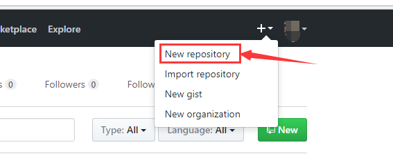
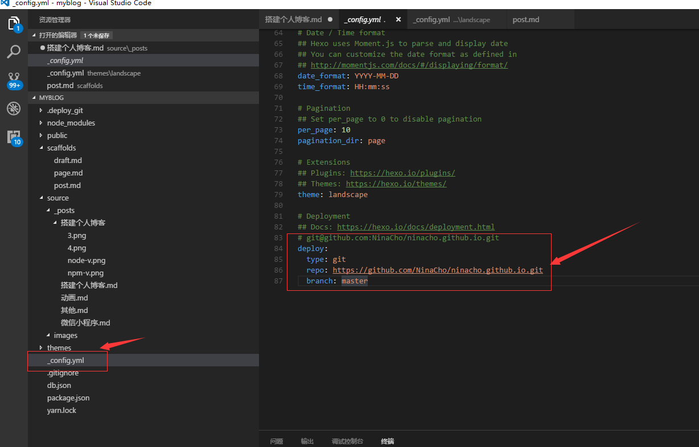

hexo 和 jekyll 区别在哪里
hexo使用nodejs， jekyll使用Ruby 就是因为nodejs的安装和用nodejs编写的hexo安装步骤比ruby简单n倍， 并且速度也快n倍，就这么简单
安装hexo本地环境
安装nodejs
下载nodejs https://nodejs.org/zh-cn/
打开msi文件 一直下一步安装ok后，检测PATH环境变量是否配置了Node.js，点击开始=》运行=》输入”cmd” => 输入命令”path”，输出如下结果：
PATH=C:\oraclexe\app\oracle\product\10.2.0\server\bin;C:\Windows\system32;
C:\Windows;C:\Windows\System32\Wbem;C:\Windows\System32\WindowsPowerShell\v1.0\;
c:\python32\python;C:\MinGW\bin;C:\Program Files\GTK2-Runtime\lib;
C:\Program Files\MySQL\MySQL Server 5.5\bin;C:\Program Files\nodejs\;
C:\Users\rg\AppData\Roaming\npm
我们可以看到环境变量中已经包含了C:\Program Files\nodejs\
检查Node.js版本输入node -v返回下图表示安装成功
安装npm
npm在nodejs安装过程中已经自带安装的，输入npm -v 返回下图表示安装成功
安装本地hexo
npm i hexo-cli -g # 选择一目录执行
cd C/ninacho/blog # cd 目录
hexo init
hexo g # 生成静态页面
打开浏览器http://localhost:4000 本地预览 看到hexo的页面即ok
部署github pages
1、注册github账号 点击这里开始注册
2、安装GitHub的本地客户端 msysgit是Windows版的Git，从https://git-for-windows.github.io下载（网速慢的同学请移步国内镜像），然后按默认选项安装即可。
3、安装完成后，在开始菜单里找到“Git”->“Git Bash”，蹦出一个类似命令行窗口的东西，就说明Git安装成功！
4、创建git个人仓库
—— 登录github
—— new Repositories 如下图

—— 如下图 填写在后面的Respository name 里面输入：username.github.io 这个格式是定的，username是你要设置的名字
github pages结合hexo
—— 部署到gitHub上 只需要在配置文件_config.xml中作如下修改：
deploy:
type: git
repo: git@github.com:NinaCho/ninacho.github.io.git
branch: master

—— 将本地hexo部署到github
hexo g # 编译生成静态页面
hexo d # 发布到github
如果hexo d的时候 提示git地址错误 无法提交 把_config.xml中的repo修改为之前创建的个人仓库的地址如：
deploy:
type: git
repo: https://github.com/NinaCho/ninacho.github.io.git
branch: master
hexo d # 后回车
輸入賬號密碼 如圖

如果你是第一次安裝git則需要你输入ssh key 下面我们来创建ssh key
—— 去到github页面， 打开setting， 如图
桌面打开本地的刚刚安装的Git Bash 在命令窗口输入
ssh-keygen # 连续三次回车
生成ok后 控制台会打印出默认保存的文件 根据提示去到文件目录，拷贝.ssh/id_rsa.pub文件内的所以内容，将它粘帖到github帐号管理中的添加SSH key界面中， 如图
点击确定，出现下图代码表示提交成功
十分钟后 打开https://ninacho.github.io/ 即可看到hexo的页面，
如果看不到就去githun你之前创建的仓库查看 hexo的编译后代码是否已经上传成功
hexo新建导航
打开本地hexo部署项目中的xxx/themes/_config.yml ,下图就是设置导航的配置 注意这里是themes文件内的配置文件
# Header
menu:
Home: /
Archives: /archives
rss: /atom.xml
新建文件
去到hexo本地项目目录， 打开Git Bash
hexo n '文件名' # 可以是中文
回车后在hexo项目中source/_posts下会生成对应的文件名.md, 这里建议改下配置执行新建时再创建对应的存储图片的文件夹，配置如下：
找到全局配置文件’_config.yml’, 找到‘post_asset_folder’设置属性为true
post_asset_folder: true # true 表示 hexo new 文件名 会生多一个文件夹存储图片or其他文件
再次执行 ‘hexo n ‘文件名’’ 就会生成下图
解释： 本地hexo的’_config.yml’一共有三个， 一个是全局（配置全局文件，就在根目录下），一个主题（配置主题文件，就在themes/_config,yml），一个是编译后的(在public内，不用理会)
#####新建分类
直接在新建的md文件内添加’categories’ 属性表示分类， 如下title: 动画 date: 2017-09-01 10:26:37 tags: categories: 动画
或者可以直接在scaffolds/post.md 下添加’categories’属性 这样new之后的默认页面都会有这个属性
插入图片
有三种方式可以插入图片
1、将本地图片放置在根目录下的source/images, 没有images就自己创建文件夹，
 # [xxx] 这里输入文字 会显示在图片下方 表示图片标题
# [xxx] 这里输入文字 会显示在图片下方 表示图片标题
刷新本地页面直接可以看到 如图
2、 将本地图片放置在下图的对应文件夹处, 需要’hexo g’ 编译后图片才能查看 否则无法查看
# 这里的路径直接相对路径就好 11.png对应文件名称
如图
3、将图片上传到cdn域名将生成的url添加在文章即可
- 以上插入图片除了可以通过markdown的引用方式之外 还可以直接
以上内容是简单搭建博客 编写文章的步骤，如果想更多操作请查看
搭建个人博客（二）